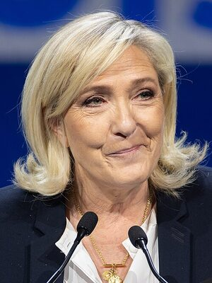

RN
Priorité nationale dans l'accès aux aides sociales et au logement
Source : Programme RN 2024 – rassemblementnational.frContrôle strict de l'immigration avec quotas annuels votés au Parlement
Source : Programme RN 2024Retrait de la France du commandement intégré de l'OTAN
Source : Programme présidentiel 2022Baisse de la TVA sur l'énergie et les produits de première nécessité à 5,5%
Source : Programme législatif RN 2024Retraite à 60 ans pour les carrières longues (40 ans de cotisation)
Source : Programme présidentiel 2022Rétablissement de la police de proximité dans les quartiers
Source : Programme sécurité RNRéférendum d'initiative citoyenne (RIC) sur les grands sujets nationaux
Source : Programme présidentiel 2022Relance industrielle française par le protectionnisme et les préférences nationales
Source : Programme économique RNLaïcité stricte : refus du communautarisme dans les institutions
Source : Programme RN 2024Révision des traités européens pour récupérer des compétences souveraines
Source : Programme européen RN 2024Fondé en 1972 par Jean-Marie Le Pen à partir de diverses mouvances de la droite radicale, le Front National a longtemps été cantonné aux marges du système politique français. Pendant vingt ans, le parti reste une force protestataire sans représentation parlementaire significative. Le choc du 21 avril 2002, lorsque Jean-Marie Le Pen accède au second tour de la présidentielle face à Jacques Chirac, marque un tournant : l'extrême droite n'est plus marginale.
Marine Le Pen prend la tête du parti en 2011 et entreprend une stratégie de "dédiabolisation" : changement de nom (Rassemblement National en 2018), rupture affichée avec les positions les plus radicales, effort de normalisation. Cette refonte porte ses fruits électoraux : 33,9% au second tour en 2017, 41,5% en 2022. Jordan Bardella, président du parti depuis 2022, incarne cette nouvelle génération.
Aux législatives de 2024, le RN obtient 143 sièges après une dissolution surprise de Macron, devenant le premier groupe d'opposition. Le parti se positionne comme la force anti-establishment par excellence, captant une large part du vote des classes populaires et des zones rurales.

Avocate, fille du fondateur, elle a transformé le FN en force électorale mainstream. Candidate trois fois à la présidentielle (2012, 2017, 2022).
Né en 1995 en Seine-Saint-Denis, eurodéputé depuis 2019. Incarne le renouvellement générationnel du parti. Pressenti Premier ministre en 2024.
Photo : European Union · European Parliament · Commons
Ancien UMP, rejoint le FN en 2014. Porte-parole médiatique influent, représente l'aile "normalisée" du parti.
| Thème | Position du Rassemblement National |
|---|---|
| Immigration | Contrôle strict, quotas annuels votés par le Parlement, priorité nationale, remise en cause du droit du sol |
| Économie | Protectionnisme, préférence nationale, baisse de la TVA sur les nécessités, soutien aux PME |
| Environnement | Défense du nucléaire, scepticisme sur les politiques climatiques contraignantes, priorité à la souveraineté alimentaire |
| Europe | Révision des traités, récupération de compétences souveraines, critique de la Commission européenne |
| Social | Retraite à 60 ans pour carrières longues, baisse des charges sur les bas salaires, priorité aux Français |
| Sécurité | Tolérance zéro, peines planchers, police de proximité, expulsions des étrangers délinquants |
| Institutions | RIC (référendum d'initiative citoyenne), rétablissement de la proportionnelle, réforme de la justice |
Programme officiel complet
rassemblementnational.fr — Programme législatif et présidentiel